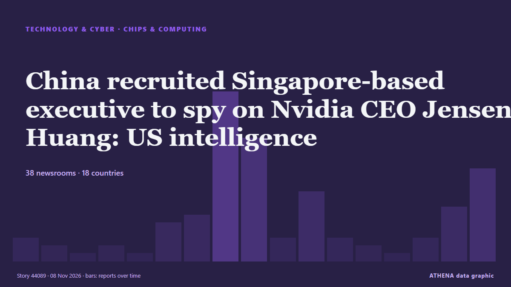

Technology, AI & Cybersecurity
SponsoredPresented by  Cybernetics and Artificial Intelligence Lab Welcome to the Cybernetics and Artificial Intelligence Laboratory, established at the Department of Business Administration of the National and Kapodistrian University of Athens. The lab is headed by Professor Dimitrios Thomakos. The lab aims to do research that can be published in top venues. Our research uses tools and methods of Artificial Intelligence, and lies in the following areas: - Forecasting - Decision making - Cyber security - Finance We are always looking forward to collaborating with exceptional students!
Cybernetics and Artificial Intelligence Lab Welcome to the Cybernetics and Artificial Intelligence Laboratory, established at the Department of Business Administration of the National and Kapodistrian University of Athens. The lab is headed by Professor Dimitrios Thomakos. The lab aims to do research that can be published in top venues. Our research uses tools and methods of Artificial Intelligence, and lies in the following areas: - Forecasting - Decision making - Cyber security - Finance We are always looking forward to collaborating with exceptional students!

Chips & computingChina recruited Singapore-based executive to spy on Nvidia CEO Jensen Huang: US intelligence
Nvidia's lead over Huawei in China's AI accelerator market has narrowed by 80% in a year, bringing CEO Jensen Huang's warnings about losing the country's US$50 billion AI chip market closer to… from DigiTimes Asia
| 26 Oct | 78 |
|---|---|
| 27 Oct | 84 |
| 28 Oct | 88 |
| 29 Oct | 89 |
| 30 Oct | 80 |
| 31 Oct | 34 |
| 1 Nov | 48 |
| 2 Nov | 111 |
| 3 Nov | 102 |
| 4 Nov | 99 |
| 5 Nov | 111 |
| 6 Nov | 50 |
| 7 Nov | 27 |
| 8 Nov | 13 |
DOJ Creates 'Super Intelligence' Task Force to Guard Against AI Abuse
Led by two senior DOJ officials, the Super Intelligence Task Force will target misuse by foreign governments, criminal groups and fraudsters—while pushing AI developers to tighten internal controls… from Decrypt
China's Journalists' Day celebrated at 9th CIIE
CIIE highlights China's market appeal and opening up. from CGTN (China)
Want to fly to the Moon? NASA is hiring astronauts. Here's how to apply
Cape Canaveral: Want to fly to the moon and help build a permanent lunar base? from Gulf News
Pori Moni served legal notice demanding unconditional apology over court incident
A Supreme Court lawyer has sent a legal notice to actress Pori Moni, asking her to issue a written, unconditional apology for an incident that took place on the court premises on Thursday, 5 November. from Prothom Alo (English)
The M6 MacBook Pro is probably the last of its kind
On November 6th, Apple will release an all-new MacBook Pro. from The Verge
Jack Grealish agreement reached as Everton manager David Moyes told what to do
Jack Grealish has missed the last three Everton games after breaching club discipline and David Moyes has been told how to deal with the winger. from Liverpool Echo
Camerimage Opens With a Robot, an AI Reckoning and a Minute of Silence for Kraków
The 34th edition of Camerimage kicked off with Luca Guadagnino’s 'Artificial' and included honors for Darren Aronofsky and the THR Visionary Award for cinematographer Janusz Kamiński. from The Hollywood Reporter
Can't cook or shower: Indonesians take aim at data centres
Indonesia and Malaysia face growing frustration over tech facilities near Singapore. from Express Tribune
Protesters storm site of Microsoft’s planned Amsterdam data centre
Activists in Amsterdam have stormed the site of a proposed Microsoft data centre. from Al Jazeera English
Environmental groups embrace AI, even as they warn of data center impacts
15 environmental groups use AI but warn of data centres' heavy electricity and water demands. from Express Tribune
Microsoft is winding down Oracle deal to rent AI cloud capacity: Report
US stocks are giving back some of their gains as a report circulates that Microsoft is winding down an arrangement with Oracle for AI cloud capacity. from investingLive (ForexLive)
Iran-Linked Ships Hover Over Subsea Cables in Gulf of Oman
Ships linked to Iran looped, loitered and went dark over undersea internet cables in the Gulf of Oman in the weeks after Tehran threatened the region’s digital infrastructure, the Financial Times… from Iran International (English)
Europe supermarket fridge hack: An interactive graphic explainer
Nobody knows who hacked Europe's supermarkets. from Politico Europe
Google acquires Wyoming data center site
Google has acquired Crusoe’s data center site in southeast Wyoming, the AI infrastructure developer said on Friday, a day after the Alphabet (GOOGL.O), opens new tab unit announced a $17-billion… from FBC News
Former AJK President Raja Zulqarnain Khan passes away
Elderly Kashmiri politician and former President of Azad Jammu and Kashmir State Raja Muhammad Zulqarnain Khan has died in an Islamabad hospital after brief illness on Saturday. from Business Recorder
EU Accuses TikTok Over Harmful Rabbit Hole Feeds
The European Commission says TikTok’s rabbit hole feeds breach the Digital Services Act and risk mental health. from Greek City Times
Hacked blood banks, breached supermarket fridges and plane bomb hoaxes: What’s going on in Europe?
After a week in which several European sectors were thrown into disarray, how concerned should the continent be of hybrid warfare by hostile adversaries? from The Independent
10th TRT World Forum Unveiled in Istanbul, Some 150 Specialists from 43 Countries Participating
Annual event brings together global leaders, academics, journalists this year under theme 'A World Without a Center: Who Leads When the Rules Run Out?' from Anadolu Agency (English)
Weekly Roundup 06 November 2026
The investment fund probe has expanded to serving regulators, former senior financial officials and political figures, while journalists covering the scandal face prison sentences of up to nearly 19… from bianet English
Staff at RTE campus evacuated after bomb threat
It comes after bomb threats were sent to airlines, including an Aer Lingus flight from Dublin, over recent days. from The Irish News (Belfast)
3 Charged in Scheme to Use AI to Impersonate CEOs and Attorneys to Steal $129 Million
Three people accused of using artificial intelligence to impersonate corporate executives and attorneys to steal about $129 million have been indicted on charges of wire fraud and aggravated identity… from The Canadian Press (via CityNews)
World in pictures, November 4, 2026
The best photos from the international wire agencies as chosen by The Age picture editors. from Sydney Morning Herald
Gallen speaks after sickening knockout
Paul Gallen speaks and says 'Father Time is undefeated' after being knocked out by Nelson Asofa-Solomona. from Sydney Morning Herald
‘We will go after this’ – Taoiseach vows to hunt down those behind bomb threats to Irish Independent and other media outlets
A threat said that a bomb would detonate on the site within 45 minutes. from Irish Independent
OpenAI to press ahead with data-center expansion despite midterm sweep, CFO tells CNBC
Voters across the country on Tuesday voiced their support for candidates who have pledged to place restrictions on data center development. from CNBC World
Ukrainian forces carry out over 30,000 drone missions in single month for first time
Verified Delta combat data has revealed Ukrainian unmanned ground vehicles carried out 31,398 frontline supply and casualty evacuation tasks in October. from Ukrainska Pravda (English)
OpenSSH flaw lets attackers log into password-disabled Linux accounts
A newly disclosed OpenSSH vulnerability dubbed "*sshole" allows attackers to log in to certain Alpine Linux and other musl-based Linux accounts that are configured to block password authentication… from BleepingComputer
After backlash over PC memory remarks, Sam Altman changes his name to 'RAM'
Sam Altman recently changed his name on X to 'Ram Altman' due to criticism of his RAM remarks. from Times of India
Top Democrats call to rein in AI buildout after midterms sweep: 'National data center moratorium now'
Democratic winners and progressive lawmakers are calling for tougher limits on AI and data centers after the 2026 midterm elections. from CNBC World
Bomb threats spread to European newsrooms after wave of passenger jet scares
Spain's foreign minister said the continent appeared to be facing "hybrid aggression and a form of psychological warfare". from ABC News Australia
GoDaddy's CEO says he won't read work written with AI. Here's how he can tell.
If you can't take the time to do your own writing, don't expect it to get read. from Business Insider
Chainalysis says breach exposed password hashes and live tokens
Chainalysis disclosed password hashes and live tokens were exposed after initially reporting only non-sensitive customer data was accessed. from Cointelegraph